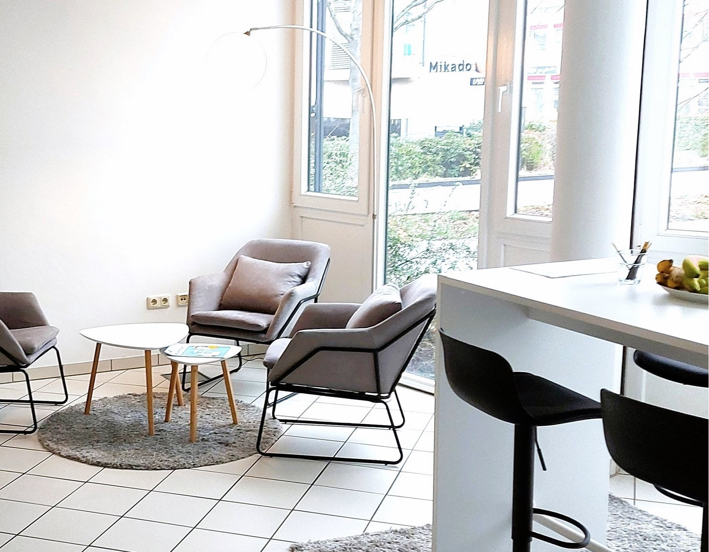
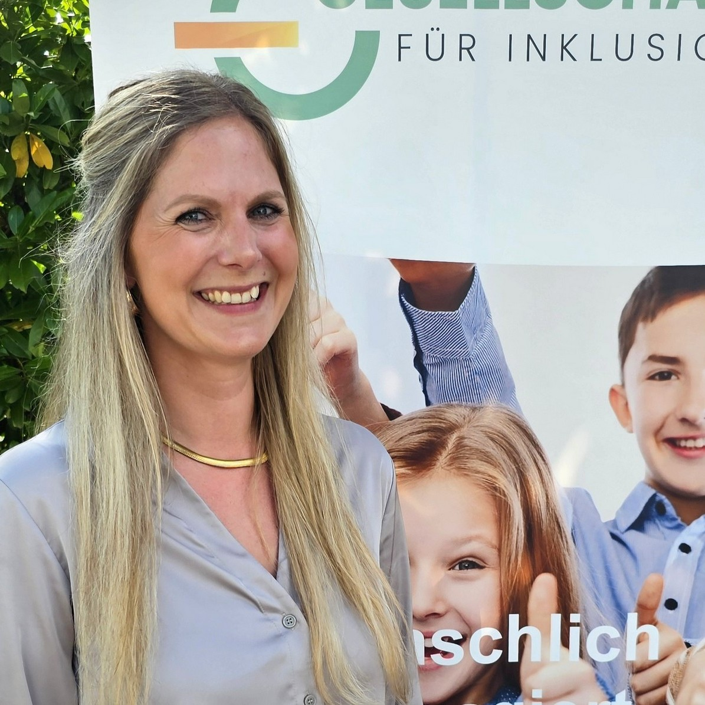

Wir sind mit den Leistungen der Schulbegleitung sehr zufrieden. Unsere Anliegen werden immer schnell bearbeitet und eine Lösung gefunden. Im Krankheitsfall wurde immer eine Ersatzkraft gefunden!
Standort · GFI Rheinland
Köln Schul- und Kitabegleitung.
Unser Standort in Köln wurde im Jahr 2022 gegründet. Leidenschaftlich und engagiert bieten wir hier vielfältige Leistungen im Bereich der Schulbegleitung an Schulen und der Kitabegleitung an Kitas an.
Die GFI in Köln
Seit 2022 in Köln
für Sie da.
Unser Standort in Köln wurde im Jahr 2022 gegründet. Leidenschaftlich und engagiert bieten wir hier vielfältige Leistungen im Bereich der Schulbegleitung an Schulen und der Kitabegleitung an Kitas an.
So vielfältig wie die Menschen sind, mit denen wir zu tun haben und arbeiten, so unterschiedlich und verschieden müssen auch wir sein. Unser Team besteht daher sowohl aus motivierten Quereinsteigern aus anderen Berufsfeldern mit vielfältigen Vorerfahrungen und Talenten als auch aus fachlich ausgebildetem pädagogischem Personal.
So vielfältig wie die Menschen, mit denen wir arbeiten – so unterschiedlich muss auch unser Team sein.
Unser Angebot vor Ort
Inklusionsassistenz an Schulen und Kitas
- Unser Leistungsangebot richtet sich an Kinder und Jugendliche mit einer (drohenden) seelischen, körperlichen und/oder geistigen Behinderung.
- Da es sich bei der Inklusionsassistenz um eine soziale Einzelfallhilfe handelt, ist die inhaltliche Ausgestaltung ganz auf die individuellen Erfordernisse und Bedürfnisse des jungen Menschen ausgerichtet.
- Unsere Leistungen umfassen beispielsweise die Bereitstellung von räumlichen Orientierungshilfen innerhalb und außerhalb des Schulgebäudes, die Unterstützung bei Raum- und Situationswechseln (Pausen), das physische zugänglich machen von Unterrichts- und Spielmaterialien.
Kundenstimmen
Erfahrungen von Familien und Partnern
Herausragendes Engagement, setzen sich sehr für eine passende I-Kraft ein.
Ich habe den Eindruck, dass unsere Schulbegleitung ihre Arbeit sehr ernst nimmt und Freude an ihrer Tätigkeit hat.
Unser Sohn braucht seit vielen Jahren eine Inklusionsassistenz und wir hatten noch nie ein so gutes Zusammenspiel zwischen Anbieter, Eltern, Schule und I-Helferin. Es wird stets Kontakt gehalten und versucht, Lösungen und Entlastungen zu finden.
Die Firma hat ganz viel Herz. Wir können sie uneingeschränkt weiterempfehlen!
Wir sind insgesamt sehr zufrieden. Unsere Schulbegleitung wurde sorgfältig ausgewählt und passt gut zu unserem Kind. Wir empfehlen Euch uneingeschränkt weiter und sind froh, so gut betreut zu werden.
Wir hatten Probleme mit unserem alten Schulbegleiter, der durch einen anderen Anbieter gestellt worden war. Es wurde sich auf unsere Kontaktanfrage direkt bei uns gemeldet und uns schnell ein neuer Schulbegleiter organisiert. All dies trotz Corona!
Passgenaue Auswahl der Inklusionsassistenz und guter Blick für die Bedürfnisse. Herausragendes Engagement, setzen sich für eine passende I-Kraft auch in einem besonders schwierigen Fall ein.
Die Eltern und ich sind mit den Leistungen unserer Inklusionsbegleiterin sehr zufrieden. Wir stehen im wöchentlichen Austausch. G. mag sie und freut sich über ihre Begleitung, über die gemeinsamen Aktivitäten.


Für Eltern und Angehörige
Von Anfang an an Ihrer Seite
Wir stehen Ihnen von Anfang an bei allen Fragen zur Seite und kümmern uns mit voller Hingabe um Ihre Anliegen. Wir beraten Sie falls gewünscht schon bei der Leistungsbeantragung oder bei allen anderen Fragen rund um das Thema Inklusionsassistenz. Sprechen Sie uns gerne an!
Wie können wir Ihnen helfen?
- Wir bieten eine Palette unterschiedlichster Leistungen an, um Kinder und/oder Jugendliche mit und ohne Behinderung sowie Familien zu unterstützen.
- Es kann sich dabei z. B. um Leistungen in der Schule, in der Freizeit oder im familiären Umfeld handeln.
- Je nach individuellem Bedarf können wir auf eine Vielzahl unterschiedlicher Mitarbeiter mit unterschiedlichsten Qualifikationen zurückgreifen (z. B. Sozialpädagogen, Experten im Bereich der Autismusförderung, pädagogische Mitarbeiter mit einem hohen Fach- und Erfahrungswissen im Bereich herausfordernder Verhaltensweisen, etc.).
- Unser Methodenkoffer ist vielfältig: In unserer täglichen Arbeit greifen wir häufig auf unser systemisches Repertoire oder Methoden der unterstützten Kommunikation, TEACCH sowie Kommunikationsmaterialien in leichter Sprache zurück.
Wie ist der Weg?
- Rufen Sie uns an oder schreiben Sie uns eine Mail.
- Wir besprechen mit Ihnen den Bedarf und unterstützen Sie bei der Antragsstellung beim zuständigen Jugendamt oder Eingliederungshilfeträger.
- Nach der Bewilligung laden wir Sie zu einem ersten Kennenlerngespräch ein, in welchem wir mit Ihnen den Bedarf sowie Ihre Erwartungshaltung besprechen.
- Nach Ablauf eines Monats und ersten Erfahrungen laden wir Sie zu einem gemeinsamen Reflexionsgespräch ein, um gemeinsam die Passgenauigkeit der Unterstützung zu überprüfen.
- Wir halten Sie regelmäßig auf dem Laufenden und unterstützen Sie auch bei gemeinsamen Gesprächen mit dem Jugendamt oder dem Eingliederungshilfeträger.
Warum wir?
- Wir nehmen uns die Zeit für Sie und Ihr Kind, die Sie brauchen.
- Wir hören Ihnen zu und finden gemeinsam mit Ihnen die Lösungen, die Ihr Kind benötigt.
- Wir beziehen Sie in alle Entscheidungen mit ein, angefangen von der Auswahl des passenden Mitarbeiters bis zur gemeinsamen Abstimmung der benötigten Leistungen.
- Sollte einmal einer unserer Mitarbeiter erkranken, organisieren wir innerhalb kürzester Zeit eine adäquate und fachlich geeignete Vertretung.
- Wir unterstützen Sie bei Bedarf in der Kommunikation mit Behörden und vermitteln zwischen Eingliederungshilfeträger bzw. Jugendamt und Ihren Interessen.
- Wir stehen mit unserem Namen für unsere Qualität und unsere Leistungen.
Für Leistungsträger, Schulen, Kooperationspartner
Gute Kooperation ist entscheidend für das Gelingen
Bei unseren Leistungen handeln wir stets nach dem Credo so wenig Unterstützung wie möglich – so viel Hilfe wie nötig! Mit dem Beginn der Inanspruchnahme einer Leistung durch die GFI hat der junge Mensch nunmehr eine weitere Bezugsperson, die maßgeblich Einfluss auf die Entwicklung des Kindes nimmt.
Aus dem systemischen Grundgedanken heraus wird klar, dass die Veränderung eines Lebenssystems die Veränderung in allen anderen Systemen zur Folge hat. Uns sind daher eine gute Kooperation und Zusammenarbeit nicht nur wichtig, sondern diese sind entscheidend für das Gelingen der Maßnahme und die angestrebten Ziele.
Was uns vor Ort auszeichnet
- Standort in Köln seit 2022
- Inklusionsassistenz an Schulen und Kitas
- Schulbegleitung und Kitabegleitung
- aktiv in Köln und Umgebung
- verlässliche Vertretung bei Ausfällen
- enge Kooperation im Hilfesystem
Jetzt Kontakt aufnehmen
Sie haben Fragen?
Wunderbar.
Denn gerne stehen wir Ihnen für einen persönlichen Austausch zur Verfügung. Wir freuen uns darauf, Sie kennenzulernen!

Isabell Kloppmann
Fachbereichsleitung Inklusionsassistenz Köln
Ich freue mich auf Ihre Nachricht!
Vielen Dank für Ihre Nachricht.
Wir prüfen Ihre Angaben und leiten sie an die passende Ansprechperson am Standort Köln weiter. Sie erhalten anschließend eine Rückmeldung zu den nächsten Schritten.